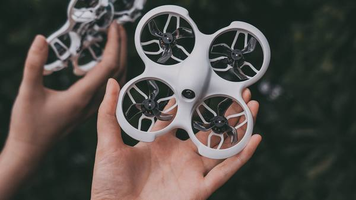

Cetus FPV

Cetus FPV to dron stworzony z myślą o miłośnikach lotów FPV (First Person View). Poznaj jego wyjątkowe cechy:
- Szybki i zwrotny: Cetus FPV oferuje dynamiczny i zwrotny lot, co pozwala na imponujące manewry w powietrzu.
- Wysoka jakość obrazu: Dron jest wyposażony w kamerę, która umożliwia nagrywanie wideo i oglądanie obrazu w czasie rzeczywistym w dobrej jakości.
- Odpowiedni dla FPV: Cetus FPV jest gotowy do lotów w trybie FPV i obsługuje gogle FPV.